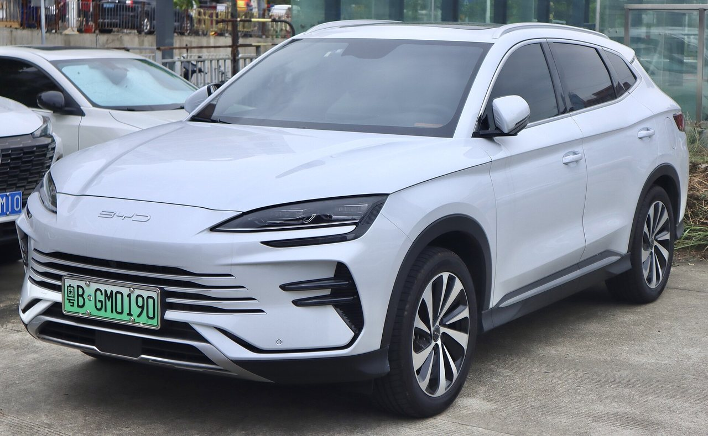

Амортизаторы
Передние и задние, от $120 «под ключ». На наших дорогах — самая частая позиция по модели.
Запчасти из Китая под заказ
Семиместный SUV весом более двух тонн: подвеска и тормоза здесь работают с повышенной нагрузкой. Привозим ходовую, тормоза и кузовщину под конкретную версию EV или DM.
Tang — большой семейный SUV, и более двух тонн массы чувствует прежде всего ходовая: амортизаторы, рычаги, ступичные подшипники и тормоза изнашиваются быстрее, чем у более легких моделей. Версии EV и DM, разные годы и комплектации имеют свои артикулы — подбираем по VIN, чтобы все встало с первого раза.

Передние и задние, от $120 «под ключ». На наших дорогах — самая частая позиция по модели.
Полный набор элементов передней и задней подвески под конкретный год.
Большое тяжелое авто: диски корродируют от рекуперации, колодки берут комплектом.
Гул на скорости — частое обращение. Привозим ступичные узлы в сборе.
Фары, фонари, бамперы, крылья — с креплениями и фотоотчетом.
Опишите симптом своими словами — менеджер подскажет, какая деталь обычно нужна, и проверит по VIN.
Под нагрузкой первыми сдаются стойки стабилизатора и амортизаторы. Привезем комплект на ось.
Классический симптом ступичного подшипника тяжелого SUV. Менять лучше узлом в сборе.
Сначала диагностика всех блоков — потом деталь. У нас для этого есть дилерский VDS.
Поведенные диски: привезем диски + колодки комплектом под вашу версию.
Авиа — от $15,5/кг (от 30 кг — от $11,3/кг), море — от $5,6/кг (от 30 кг — от $2,5/кг). Цена включает доставку и растаможку, фиксируется до оплаты. Точную стоимость конкретной детали менеджер подтверждает после проверки VIN — до 30 минут в рабочее время.
Модель, VIN и что нужно — формой, в Telegram или по телефону.
Сверяем артикул и комплектацию в каталогах дилера в Китае.
Авиа или море, срок и финальная сумма «под ключ» — до оплаты.
Фотоотчет перед отправкой, трек-номер и статусы до получения.
Ошибки блока тормозов, жесткая подвеска или некорректная работа систем на Tang — часто вопрос ПО. Сделаем диагностику всех блоков через дилерский VDS и скажем честно: деталь или прошивка.
Покажем оба варианта с ценами. Для Tang важно брать детали, рассчитанные на его массу — подскажем, что ставят сами дилеры.
Да, и это обычно выгоднее по доставке: один вес, одна проверка, один маршрут.
Не обязательно. Посчитаем авиа и море: разница в сроках 14 против 60 дней, в цене — зависит от габаритов.
Не полностью: масса и развесовка разные, часть элементов отличается. VIN дает точный ответ.